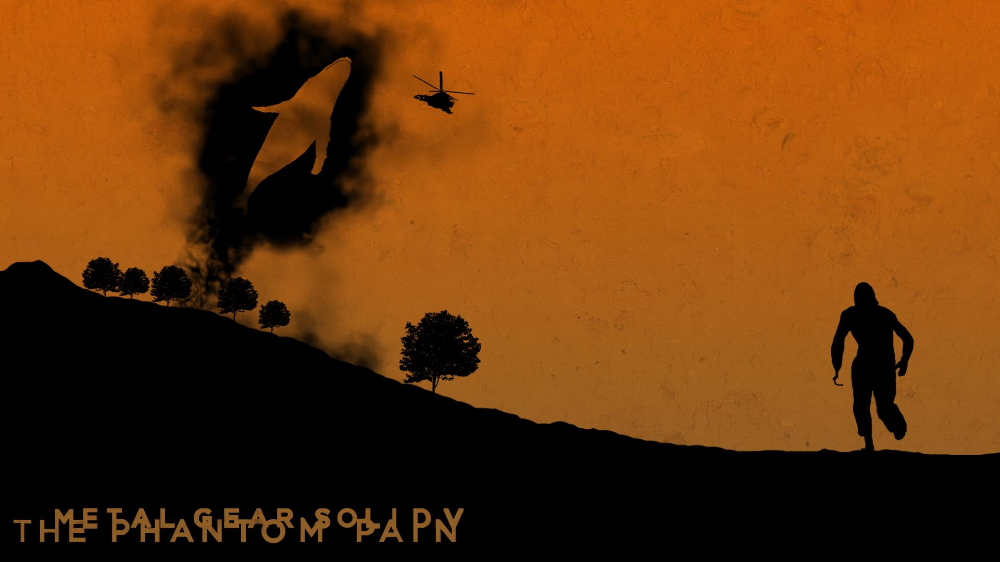

Одна из лучших частей серии Metal Gear, которая происходит спустя 9 лет после Ground Zeroes. В игре присутствует "каноничная" концовка, которая откроется только после того, как Вы пройдете 46 миссий.
PS: После прохождения основного сюжета советую ознакомиться с гайдами на тему того, как открыть ту самую концовку.
Игра доступна на платформах текущего поколения.